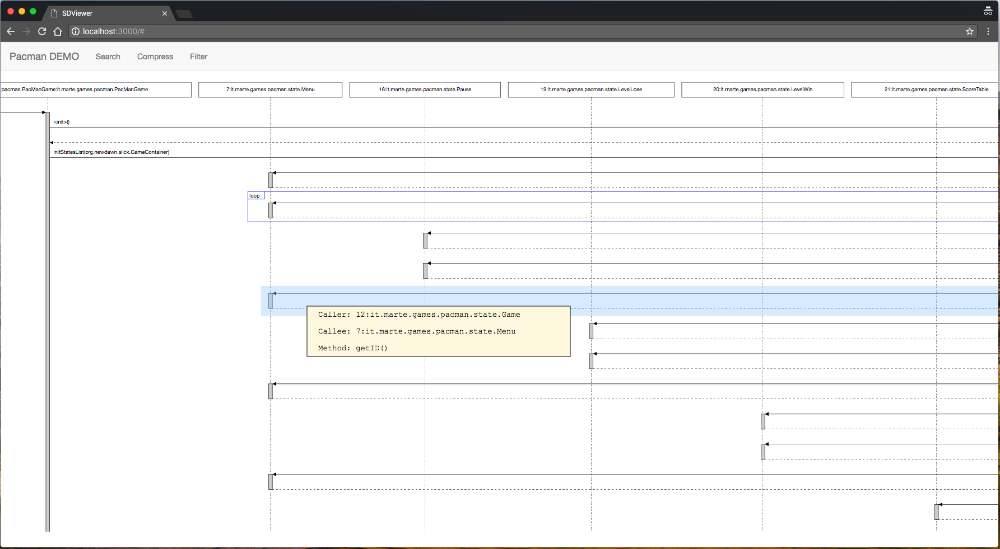

SDExplorer
SDExplorer (Sequence Diagram Explorer) is a flexible and lightweight tool for visualizing program's behavior.

Playground
A 'what you see is what you get' playground demo. Limited but fundamental features are provided for a brief understanding of SDExplorer.